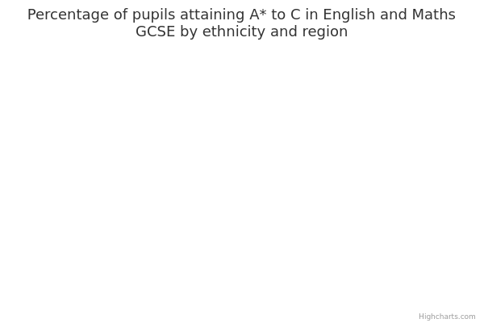

A* to C in English and Maths GCSE attainment for children aged 14 to 16 (key stage 4)
The main facts and figures show that:
-
in 2015/16, there were 540,689 pupils in key stage 4, of which ethnicity was known for 534,918 pupils (99%)
-
79% were White, 10% were Asian, 5% were Black, 4% were Mixed, 1.5% came from the Other ethnic group and 0.4% were Chinese
-
overall, 63% of pupils achieved A* to C in English and Maths GCSE, making this the national average
-
the percentage of Chinese and Asian pupils who achieved A* to C in English and Maths GCSE was above the national average
-
the percentage of Black, Mixed race and White pupils who achieved A* to C in English and Maths GCSE was below the national average
-
across all ethnic groups, girls were more likely to achieve A* to C in English and Maths GCSE than boys – 67% of girls did so, compared to 59% of boys
-
the pupils least likely to achieve were Gypsy/Roma boys – 9% of this group attained A* to C in English and Maths GCSE
-
the biggest gap between girls and boys, at 14.5 percentage points, was found among Black Caribbean pupils: 58% of girls achieved A* to C in English and Maths GCSE compared to 43.5% of boys
-
across all ethnic groups, pupils eligible for free school meals (FSM) were less likely to achieve A* to C in English and Maths GCSE than those not eligible: 39% of FSM-eligible pupils did so, compared to 63% of those not eligible
-
Gypsy/Roma boys eligible for FSM were the least likely to achieve – 7% of this group attained A* to C in English and Maths GCSE
-
the biggest attainment gap between FSM-eligible pupils and those not eligible, at 37 percentage points, was found among Irish pupils: 40% of FSM-eligible pupils achieved A* to C in English and Maths GCSE, compared to 77% of those not eligible
-
overall, pupils at school in London and the South East were most likely to achieve A* to C in English and Maths GCSE – 66% did so
-
Black pupils were most likely to achieve A* to C in English and Maths GCSE in the East of England (66% did so) and Mixed race pupils in the North East (69% did so); all other ethnic groups did best in London and the South East
-
Black pupils in the South West were the group least likely to achieve – 49% attained A* to C in English and Maths GCSE
-
across all ethnic groups, pupils with special educational needs (SEN) were less likely to achieve A* to C in English and Maths GCSE than those not eligible: 24% did so, compared to 70% of pupils without SEN
-
Black pupils with SEN were least likely to achieve – 8% of this group attained A*- C in English and Maths
Things you need to know
Caution should be used when comparing results based on small numbers of pupils.
Attainment is lower for children from a Traveller of Irish Heritage background – however, there were only 122 pupils from this background in key stage 4 in 2015/16, a much smaller number than for other ethnic groups (for example, there were 20,434 Pakistani pupils in key stage 4). Therefore, data comparisons between Traveller of Irish Heritage pupils and other ethnic groups may be unreliable. The ethnicity of 1.1% of pupils (5,771) is not accounted for. This includes pupils whose ethnicity was not surveyed, pupils who refused to be surveyed, and pupils whose ethnicity could not be determined. Any unapproved qualifications, such as unregulated international GCSEs, are not included in this data. Therefore, this data does not represent all qualifications taken by pupils, only those approved by the English Baccalaureate (EBacc). The EBacc is a measure of school performance that is awarded to pupils who get a grade C or above in the 5 core academic subjects (English, Maths, Science, a language, and History or Geography) at key stage 4 in any government-funded school. It was first introduced into the performance tables in the 2009 academic year. Qualifications approved by the Ebacc count towards the secondary school performance tables. The figures vary between ‘all schools’ and ‘state schools’ mainly due to the impact of unregulated international GCSEs taken in independent schools.
In the published ‘statistical first release’ (SFR) for A* to C GCSE attainment, the Department for Education (DfE) has ‘suppressed’ very small numbers (for example, values of 1 or 2, a percentage based on 1 or 2 pupils who achieved, or 0, 1 or 2 pupils who did not achieve a particular level). This is because, where the size of the ethnic group population is small enough that an individual’s identity could come to light, information is excluded, or 'suppressed', to preserve confidentiality. This is consistent with DfE’s statistical policy statement on confidentiality.
Data for some Muslim and Sikh schools was not included in the statistics for faith schools, because the small numbers of pupils make it impossible to draw meaningful conclusions about their attainment. Data for faith schools is also only provided for pupils in state-funded mainstream schools.
What the data measures
This data measures the percentage of pupils within each ethnic group achieving A* to C in English and Maths GCSE.
It also looks at the total number of children achieving A* to C, and analyses each ethnic group’s percentage share of that total.
The data covers the academic year 2015/16 (September 2015 to July 2016).
Key stage 4 covers school years 10 and 11, when children are aged 14 to 16.
Why these ethnic categories were chosen
This data uses categories from the Department for Education’s school census, which is broadly based on the 2001 national census, with 2 exceptions:
- Traveller of Irish Heritage and Gypsy/Roma children have been separated into 2 categories
- Sri Lankan has been added to the Asian/Asian British group
These changes were made after consultations with local authorities and lobby groups.
The specific categories are as follows:
White:
- White British
- White Irish
- Traveller of Irish Heritage
- Gypsy/Roma
- Other White
Mixed/Multiple ethnic groups:
- White and Black Caribbean
- White and Black African
- White and Asian
- Other Mixed background
Asian/Asian British:
- Indian
- Pakistani
- Bangladeshi
- Sri Lankan
- Other Asian Background
Black/African/Caribbean/Black British:
- Black African
- Black Caribbean
- Other Black background
Other ethnic group:
- Chinese
- Other Background
Information about A* to C GCSE attainment is given for both specific and broad ethnic group categories where possible.
Where data is analysed by ethnicity in combination with local authority, school type, school admission, religious character or special educational needs, it is only provided for the 5 broad ethnic groups.
This is in order to preserve confidentiality and ensure individuals cannot be identified.
In these 5 broad ethnic groups, the school census replaces ‘Other ethnic group’ with ‘Chinese’, again after consultations with local authorities and lobby groups.
The 5 broad categories are as follows:
- White
- Mixed/Multiple ethnic groups
- Asian/Asian British
- Black/African/Caribbean/Black British
- Chinese
A* to C in English and Maths GCSE by ethnicity

Percentage of pupils attaining A* to C in English and Maths GCSE by ethnicity
| All - England | 63 | 540,689 |
|---|---|---|
| Asian | 67 | 51,218 |
| Asian - Any other | 73 | 8,419 |
| Asian - Bangladeshi | 67 | 8,319 |
| Asian - Indian | 77 | 14,046 |
| Asian - Pakistani | 58 | 20,434 |
| Black | 59 | 27,924 |
| Black - African | 63 | 17,349 |
| Black - Any other | 55 | 3,359 |
| Black - Caribbean | 51 | 7,216 |
| Chinese | 83 | 2,026 |
| Mixed | 63 | 22,868 |
| Mixed - Any other | 65 | 7,932 |
| Mixed - White and Asian | 72 | 5,089 |
| Mixed - White and Black - African | 62 | 2,687 |
| Mixed - White and Black - Caribbean | 54 | 7,160 |
| Other - Any other | 62 | 8,119 |
| White | 63 | 422,763 |
| White - Any other | 59 | 24,444 |
| White - British | 63 | 395,316 |
| White - Gypsy/Roma | 10 | 1,107 |
| White - Irish | 72 | 1,774 |
| White - Irish Traveller | 21 | 122 |
| unclassified | 53 | 5,771 |
Summary
The data shows that:
-
in 2015/16, the national average for A* to C attainment in English and Maths GCSE was 63%
-
83% of Chinese pupils and 67% of Asian pupils achieved A* to C in English and Maths GCSE (putting them above the national average)
-
63% of White pupils, 63% of Mixed race pupils and 59% of Black pupils achieved A* to C in English and Maths GCSE (putting them below the national average)
-
the Gypsy/Roma ethnic group had the lowest percentage of pupils achieving A* to C in English and Maths GCSE (10% did so), followed by children from a Traveller of Irish Heritage background (21% did so)
Download image and data
A* to C in English and Maths GCSE by ethnicity and free school meals (FSM)

Percentage of pupils attaining A* to C in English and Maths GCSE by ethnicity and free school meals
| Pupils eligible for free school meals | All other pupils | |||
| All - England | 39 | 72,528 | 67 | 468,161 |
|---|---|---|---|---|
| Asian | 54 | 9,018 | 70 | 42,200 |
| Asian - Any other | 58 | 979 | 75 | 7,440 |
| Asian - Bangladeshi | 61 | 2,461 | 70 | 5,858 |
| Asian - Indian | 62 | 1,042 | 79 | 13,004 |
| Asian - Pakistani | 47 | 4,536 | 61 | 15,898 |
| Black | 49 | 6,544 | 62 | 21,380 |
| Black - African | 53 | 4,086 | 66 | 13,263 |
| Black - Any other | 47 | 769 | 58 | 2,590 |
| Black - Caribbean | 39 | 1,689 | 54 | 5,527 |
| Chinese | 79 | 130 | 83 | 1,896 |
| Mixed | 43 | 4,240 | 67 | 18,628 |
| Mixed - Any other | 45 | 1,359 | 69 | 6,573 |
| Mixed - White and Asian | 48 | 732 | 76 | 4,357 |
| Mixed - White and Black - African | 48 | 529 | 65 | 2,158 |
| Mixed - White and Black - Caribbean | 37 | 1,620 | 58 | 5,540 |
| Other - Any other | 52 | 2,024 | 65 | 6,095 |
| White | 34 | 49,595 | 67 | 373,168 |
| White - Any other | 46 | 2,541 | 60 | 21,903 |
| White - British | 34 | 46,438 | 67 | 348,878 |
| White - Gypsy/Roma | 9 | 330 | 11 | 777 |
| White - Irish | 40 | 213 | 77 | 1,561 |
| White - Irish Traveller | 16 | 73 | 29 | 49 |
| unclassified | 35 | 977 | 56 | 4,794 |
Summary
Eligibility for FSM is used as an indicator of deprivation by the Department for Education. For more about who qualifies for FSM, see Methodology.
The data shows that:
-
13% of pupils (72,528 children) in key stage 4 were eligible for free school meals (FSM) in 2015/16
-
across all ethnic groups, FSM-eligible pupils were less likely to achieve A* to C in English and Maths GCSE than those not eligible: overall, 39% of pupils eligible for FSM achieved A* to C in English and Maths GCSE, which is below the national average of 63%
-
25% of pupils from any Other ethnic background were eligible for FSM, 23% of Black pupils, 19% of pupils from a Mixed race background, 18% of Asian pupils, 12% of White pupils and 6% of Chinese pupils
-
of the broad ethnic groups, Chinese pupils had the highest percentage of FSM-eligible pupils achieving A* to C in English and Maths GCSE – 79% did so
-
White FSM-eligible pupils were least likely to achieve A* to C in English and Maths GCSE – 34% did so
-
looking at the specific ethnic groups, Gypsy/Roma FSM-eligible children were least likely to achieve A* to C in English and Maths GCSE – 9% did so
-
Irish children had the largest gap, at 37 percentage points, between the two categories, with 40% of FSM-eligible pupils achieving A* to C in English and Maths GCSE and 77% of those not eligible
Download image and data
A* to C in English and Maths GCSE by ethnicity and area

Percentage of pupils attaining A* to C in English and Maths GCSE by ethnicity and local authority
| All | White | Mixed | Asian | Black | Chinese | |||||||
| All - England | 63 | 537,808 | 63 | 421,440 | 63 | 22,753 | 68 | 50,541 | 60 | 27,589 | 84 | 1,987 |
|---|---|---|---|---|---|---|---|---|---|---|---|---|
| Barking and Dagenham | 60 | 2,201 | 55 | 1,051 | 55 | 141.0 | 72 | 398.0 | 63 | 551.0 | x | 6.0 |
| Barnet | 73 | 3,647 | 72 | 1,835 | 73 | 363.0 | 86 | 512.0 | 64 | 489.0 | 87 | 46.0 |
| Barnsley | 59 | 2,088 | 59 | 2,018 | 71 | 35.0 | x | 6.0 | 33 | 15.0 | . | - |
| Bath and North East Somerset | 70 | 2,022 | 70 | 1,863 | 65 | 74.0 | x | 24.0 | 50 | 24.0 | x | x |
| Bedford | 59 | 1,862 | 59 | 1,308 | 53 | 143.0 | 63 | 273.0 | 53 | 109.0 | 100 | 3.0 |
| Bexley | 67 | 3,192 | 62 | 2,183 | 63 | 161.0 | 84 | 207.0 | 77 | 532.0 | 85 | 40.0 |
| Birmingham | 60 | 12,035 | 61 | 4,492 | 58 | 834.0 | 61 | 4,580 | 55 | 1,489 | 82 | 45.0 |
| Blackburn with Darwen | 65 | 1,754 | 61 | 922.0 | 74 | 61.0 | 71 | 735.0 | 53 | 15.0 | x | x |
| Blackpool | 48 | 1,331 | 48 | 1,270 | 42 | 24.0 | 63 | 19.0 | 44 | 9.0 | 100 | 5.0 |
| Bolton | 59 | 3,240 | 58 | 2,354 | 50 | 88.0 | 69 | 611.0 | 46 | 124.0 | x | 7.0 |
| Bournemouth | 67 | 1,617 | 66 | 1,429 | 71 | 73.0 | 85 | 40.0 | 59 | 17.0 | x | 7.0 |
| Bracknell Forest | 61 | 1,076 | 60 | 946.0 | 69 | 49.0 | 78 | 41.0 | 69 | 26.0 | 100 | 4.0 |
| Bradford | 52 | 5,859 | 54 | 2,979 | 46 | 218.0 | 51 | 2,482 | 56 | 81.0 | x | x |
| Brent | 64 | 3,035 | 59 | 579.0 | 55 | 158.0 | 70 | 900.0 | 54 | 767.0 | x | 9.0 |
| Brighton and Hove | 65 | 2,139 | 65 | 1,802 | 69 | 181.0 | 63 | 82.0 | 51 | 41.0 | 100 | 3.0 |
| Bristol, City of | 60 | 3,138 | 60 | 2,316 | 64 | 209.0 | 67 | 253.0 | 48 | 282.0 | 73 | 15.0 |
| Bromley | 72 | 3,305 | 74 | 2,419 | 74 | 229.0 | 89 | 167.0 | 68 | 272.0 | 89 | 36.0 |
| Buckinghamshire | 74 | 5,622 | 75 | 4,220 | 68 | 312.0 | 69 | 855.0 | 61 | 132.0 | x | 18.0 |
| Bury | 62 | 2,060 | 63 | 1,636 | 61 | 101.0 | 63 | 244.0 | 47 | 36.0 | x | 4.0 |
| Calderdale | 65 | 2,524 | 67 | 2,021 | 59 | 93.0 | 59 | 375.0 | 60 | 20.0 | 100 | 4.0 |
| Cambridgeshire | 68 | 5,707 | 67 | 5,139 | 72 | 194.0 | 80 | 190.0 | 57 | 56.0 | 87 | 30.0 |
| Camden | 63 | 1,422 | 65 | 549.0 | 56 | 142.0 | 64 | 272.0 | 59 | 345.0 | x | 10.0 |
| Central Bedfordshire | 64 | 2,596 | 65 | 2,376 | 58 | 103.0 | 59 | 46.0 | 52 | 44.0 | x | 10.0 |
| Cheshire East | 68 | 3,740 | 68 | 3,509 | 66 | 93.0 | 66 | 62.0 | 62 | 13.0 | 73 | 15.0 |
| Cheshire West and Chester | 66 | 3,443 | 65 | 3,283 | 71 | 72.0 | 76 | 37.0 | 50 | 12.0 | x | 8.0 |
| City of London | . | . | . | . | . | . | . | . | . | . | . | . |
| Cornwall | 64 | 5,432 | 64 | 5,232 | 71 | 99.0 | 67 | 21.0 | 44 | 9.0 | x | x |
| County Durham | 62 | 4,979 | 63 | 4,846 | 67 | 42.0 | 70 | 33.0 | 50 | 6.0 | x | 6.0 |
| Coventry | 61 | 3,463 | 58 | 2,275 | 53 | 181.0 | 74 | 660.0 | 59 | 276.0 | x | 9.0 |
| Croydon | 61 | 3,844 | 63 | 1,534 | 59 | 424.0 | 74 | 453.0 | 59 | 1,124 | x | 21.0 |
| Cumbria | 63 | 5,134 | 63 | 4,987 | 83 | 53.0 | 65 | 31.0 | 46 | 13.0 | x | 9.0 |
| Darlington | 62 | 1,139 | 62 | 1,086 | 73 | 15.0 | 52 | 21.0 | x | x | x | 3.0 |
| Derby | 54 | 2,787 | 55 | 2,015 | 51 | 166.0 | 53 | 482.0 | 45 | 85.0 | x | 8.0 |
| Derbyshire | 62 | 7,628 | 62 | 7,297 | 59 | 161.0 | x | 75.0 | x | 19.0 | 71 | 14.0 |
| Devon | 65 | 6,971 | 65 | 6,726 | 63 | 95.0 | 77 | 26.0 | 71 | 14.0 | x | 13.0 |
| Doncaster | 60 | 3,026 | 59 | 2,808 | 57 | 61.0 | 61 | 77.0 | 46 | 35.0 | x | 10.0 |
| Dorset | 65 | 4,153 | 65 | 3,933 | 68 | 80.0 | 65 | 46.0 | x | 9.0 | x | 11.0 |
| Dudley | 56 | 3,591 | 56 | 2,974 | 53 | 183.0 | 56 | 298.0 | 46 | 70.0 | x | 4.0 |
| Ealing | 65 | 2,781 | 66 | 826.0 | 72 | 195.0 | 69 | 747.0 | 55 | 574.0 | x | 5.0 |
| East Riding of Yorkshire | 67 | 3,346 | 67 | 3,222 | 67 | 46.0 | 67 | 12.0 | x | x | x | 3.0 |
| East Sussex | 63 | 4,930 | 63 | 4,532 | 63 | 166.0 | 75 | 60.0 | 61 | 31.0 | 100 | 9.0 |
| Enfield | 63 | 3,579 | 61 | 1,754 | 65 | 324.0 | 81 | 313.0 | 59 | 879.0 | 85 | 20.0 |
| Essex | 64 | 14,607 | 64 | 13,142 | 66 | 541.0 | 83 | 337.0 | 71 | 333.0 | 80 | 51.0 |
| Gateshead | 65 | 1,913 | 64 | 1,810 | 80 | 20.0 | 86 | 35.0 | 57 | 14.0 | x | x |
| Gloucestershire | 66 | 6,385 | 66 | 5,882 | 62 | 195.0 | 86 | 146.0 | 51 | 63.0 | 83 | 23.0 |
| Greenwich | 61 | 2,204 | 55 | 1,071 | 62 | 208.0 | 75 | 207.0 | 67 | 604.0 | 83 | 24.0 |
| Hackney | 70 | 2,038 | 73 | 687.0 | 69 | 193.0 | 75 | 272.0 | 65 | 719.0 | x | 12.0 |
| Halton | 60 | 1,373 | 60 | 1,335 | 76 | 25.0 | x | x | x | x | . | - |
| Hammersmith and Fulham | 70 | 1,350 | 75 | 624.0 | 69 | 133.0 | 78 | 116.0 | 59 | 333.0 | x | 6.0 |
| Hampshire | 67 | 13,101 | 67 | 12,110 | 66 | 350.0 | 75 | 333.0 | 53 | 115.0 | 89 | 35.0 |
| Haringey | 64 | 2,231 | 65 | 1,005 | 68 | 253.0 | 72 | 127.0 | 57 | 639.0 | 67 | 12.0 |
| Harrow | 68 | 2,127 | 62 | 610.0 | 64 | 163.0 | 76 | 900.0 | 60 | 344.0 | 73 | 11.0 |
| Hartlepool | 55 | 1,068 | 55 | 1,036 | 63 | 8.0 | 71 | 14.0 | x | 5.0 | x | x |
| Havering | 64 | 2,917 | 64 | 2,237 | 61 | 127.0 | 72 | 117.0 | 66 | 362.0 | x | 11.0 |
| Herefordshire, County of | 62 | 1,732 | 62 | 1,681 | 80 | 25.0 | x | 5.0 | x | 5.0 | 100 | 4.0 |
| Hertfordshire | 70 | 12,613 | 69 | 10,336 | 65 | 702.0 | 77 | 849.0 | 71 | 447.0 | 84 | 63.0 |
| Hillingdon | 65 | 3,136 | 61 | 1,479 | 68 | 299.0 | 74 | 751.0 | 59 | 327.0 | x | 12.0 |
| Hounslow | 66 | 2,667 | 66 | 951.0 | 74 | 224.0 | 77 | 696.0 | 60 | 344.0 | x | 5.0 |
| Isle of Wight | 52 | 1,305 | 52 | 1,249 | 56 | 27.0 | 50 | 12.0 | . | - | x | 3.0 |
| Isles of Scilly | 70 | 23.0 | 67 | 21.0 | . | - | . | - | . | - | . | - |
| Islington | 64 | 1,397 | 60 | 506.0 | 64 | 158.0 | 78 | 170.0 | 63 | 423.0 | x | x |
| Kensington and Chelsea | 76 | 740.0 | 76 | 297.0 | 74 | 113.0 | 81 | 26.0 | 72 | 148.0 | x | x |
| Kent | 64 | 15,727 | 62 | 14,022 | 73 | 536.0 | 86 | 526.0 | 78 | 303.0 | 92 | 64.0 |
| Kingston upon Hull, City of | 51 | 2,255 | 53 | 2,028 | 57 | 44.0 | 71 | 17.0 | 48 | 23.0 | x | x |
| Kingston upon Thames | 78 | 1,515 | 75 | 871.0 | 83 | 115.0 | 86 | 343.0 | 66 | 73.0 | x | 23.0 |
| Kirklees | 61 | 4,534 | 63 | 3,029 | 47 | 225.0 | 60 | 1,139 | 51 | 85.0 | 100 | 10.0 |
| Knowsley | 40 | 1,147 | 39 | 1,103 | 57 | 21.0 | x | x | x | x | x | x |
| Lambeth | 62 | 1,887 | 69 | 491.0 | 59 | 228.0 | 81 | 79.0 | 58 | 945.0 | x | 15.0 |
| Lancashire | 64 | 12,106 | 64 | 10,512 | 66 | 277.0 | 59 | 1,147 | 71 | 38.0 | 88 | 32.0 |
| Leeds | 60 | 7,483 | 61 | 5,700 | 58 | 335.0 | 60 | 849.0 | 52 | 440.0 | 75 | 28.0 |
| Leicester | 57 | 3,409 | 44 | 1,149 | 51 | 210.0 | 68 | 1,631 | 53 | 345.0 | x | 3.0 |
| Leicestershire | 65 | 7,017 | 64 | 6,108 | 68 | 246.0 | 79 | 505.0 | 70 | 43.0 | 73 | 22.0 |
| Lewisham | 56 | 2,334 | 54 | 698.0 | 64 | 286.0 | 67 | 129.0 | 52 | 1,041 | 76 | 37.0 |
| Lincolnshire | 62 | 7,807 | 62 | 7,464 | 69 | 134.0 | 87 | 76.0 | 62 | 34.0 | 82 | 33.0 |
| Liverpool | 57 | 4,611 | 57 | 3,919 | 52 | 203.0 | 70 | 132.0 | 54 | 137.0 | 82 | 45.0 |
| Luton | 56 | 2,442 | 52 | 937.0 | 47 | 192.0 | 62 | 967.0 | 54 | 294.0 | x | 4.0 |
| Manchester | 55 | 4,715 | 51 | 2,312 | 50 | 344.0 | 64 | 974.0 | 57 | 741.0 | 81 | 43.0 |
| Medway | 65 | 2,967 | 64 | 2,508 | 62 | 125.0 | 82 | 157.0 | 64 | 116.0 | x | 11.0 |
| Merton | 70 | 1,440 | 70 | 734.0 | 74 | 155.0 | 71 | 222.0 | 63 | 299.0 | 100 | 6.0 |
| Middlesbrough | 55 | 1,464 | 53 | 1,164 | 66 | 53.0 | 72 | 172.0 | 67 | 15.0 | . | - |
| Milton Keynes | 60 | 2,800 | 59 | 1,994 | 59 | 187.0 | 72 | 204.0 | 55 | 338.0 | 67 | 15.0 |
| Newcastle upon Tyne | 62 | 2,393 | 62 | 1,913 | 71 | 65.0 | 67 | 249.0 | 50 | 80.0 | 46 | 13.0 |
| Newham | 63 | 3,489 | 54 | 582.0 | 51 | 199.0 | 70 | 1,601 | 60 | 917.0 | 73 | 11.0 |
| Norfolk | 61 | 8,014 | 61 | 7,551 | 57 | 178.0 | 85 | 88.0 | 66 | 68.0 | 84 | 25.0 |
| North East Lincolnshire | 56 | 1,596 | 56 | 1,486 | 55 | 38.0 | x | 10.0 | x | x | x | x |
| North Lincolnshire | 64 | 1,856 | 64 | 1,751 | 58 | 19.0 | 79 | 62.0 | 73 | 11.0 | 100 | 4.0 |
| North Somerset | 63 | 2,176 | 63 | 2,043 | 68 | 66.0 | 81 | 32.0 | 33 | 15.0 | x | 6.0 |
| North Tyneside | 68 | 1,945 | 68 | 1,833 | 86 | 35.0 | 58 | 38.0 | 73 | 11.0 | 100 | 9.0 |
| North Yorkshire | 68 | 6,188 | 67 | 5,886 | 66 | 124.0 | 76 | 93.0 | 67 | 18.0 | 100 | 13.0 |
| Northamptonshire | 60 | 7,650 | 59 | 6,612 | 54 | 327.0 | 70 | 326.0 | 60 | 282.0 | x | 20.0 |
| Northumberland | 61 | 3,198 | 61 | 3,100 | 69 | 36.0 | 79 | 42.0 | x | x | 100 | 6.0 |
| Nottingham | 50 | 2,534 | 46 | 1,528 | 53 | 231.0 | 62 | 438.0 | 51 | 248.0 | 100 | 8.0 |
| Nottinghamshire | 66 | 7,883 | 66 | 7,243 | 69 | 255.0 | 73 | 180.0 | 76 | 78.0 | 88 | 25.0 |
| Oldham | 57 | 2,920 | 58 | 1,901 | 48 | 90.0 | 56 | 822.0 | 53 | 47.0 | x | 7.0 |
| Oxfordshire | 66 | 5,975 | 67 | 5,136 | 59 | 288.0 | 60 | 317.0 | 58 | 126.0 | 81 | 26.0 |
| Peterborough | 55 | 2,292 | 54 | 1,698 | 63 | 105.0 | 54 | 367.0 | 62 | 73.0 | x | 8.0 |
| Plymouth | 58 | 2,640 | 57 | 2,489 | 70 | 43.0 | 88 | 25.0 | 17 | 18.0 | 69 | 13.0 |
| Poole | 68 | 1,438 | 68 | 1,338 | 79 | 47.0 | 87 | 31.0 | x | 4.0 | x | 5.0 |
| Portsmouth | 58 | 1,729 | 57 | 1,515 | 63 | 54.0 | 74 | 95.0 | 70 | 33.0 | x | 7.0 |
| Reading | 64 | 1,169 | 62 | 711.0 | 56 | 98.0 | 75 | 221.0 | 51 | 90.0 | 100 | 21.0 |
| Redbridge | 72 | 3,363 | 69 | 903.0 | 61 | 230.0 | 78 | 1,623 | 62 | 494.0 | x | 20.0 |
| Redcar and Cleveland | 61 | 1,620 | 61 | 1,567 | 65 | 20.0 | 57 | 21.0 | 100 | 3.0 | x | x |
| Richmond upon Thames | 71 | 1,367 | 73 | 1,025 | 70 | 135.0 | 70 | 96.0 | 50 | 48.0 | x | 12.0 |
| Rochdale | 59 | 2,315 | 58 | 1,601 | 61 | 83.0 | 61 | 551.0 | 68 | 63.0 | x | x |
| Rotherham | 62 | 3,335 | 62 | 2,980 | 67 | 58.0 | 58 | 231.0 | 61 | 38.0 | x | 8.0 |
| Rutland | 76 | 489.0 | 77 | 472.0 | 67 | 9.0 | x | 4.0 | x | 3.0 | . | - |
| Salford | 53 | 2,084 | 52 | 1,832 | 60 | 80.0 | 68 | 38.0 | 63 | 78.0 | x | 6.0 |
| Sandwell | 50 | 3,499 | 46 | 1,986 | 48 | 223.0 | 59 | 934.0 | 47 | 257.0 | x | 5.0 |
| Sefton | 60 | 3,076 | 61 | 2,896 | 63 | 60.0 | 70 | 23.0 | 40 | 15.0 | 100 | 8.0 |
| Sheffield | 59 | 5,242 | 61 | 4,001 | 53 | 265.0 | 57 | 501.0 | 56 | 260.0 | 83 | 18.0 |
| Shropshire | 63 | 2,986 | 63 | 2,857 | 66 | 53.0 | x | 19.0 | x | 7.0 | x | 8.0 |
| Slough | 72 | 1,632 | 63 | 497.0 | 74 | 112.0 | 79 | 798.0 | 63 | 148.0 | 100 | 5.0 |
| Solihull | 65 | 2,987 | 66 | 2,375 | 57 | 181.0 | 72 | 278.0 | 54 | 72.0 | x | 10.0 |
| Somerset | 63 | 5,137 | 63 | 4,933 | 67 | 100.0 | 76 | 50.0 | 50 | 14.0 | 73 | 11.0 |
| South Gloucestershire | 60 | 2,770 | 60 | 2,530 | 54 | 109.0 | 72 | 67.0 | 51 | 43.0 | 100 | 6.0 |
| South Tyneside | 62 | 1,535 | 63 | 1,421 | 53 | 17.0 | 67 | 57.0 | x | 8.0 | . | - |
| Southampton | 57 | 1,952 | 54 | 1,593 | 56 | 95.0 | 78 | 176.0 | 59 | 56.0 | x | 9.0 |
| Southend-on-Sea | 69 | 2,047 | 67 | 1,649 | 66 | 91.0 | 84 | 135.0 | 78 | 125.0 | x | 22.0 |
| Southwark | 69 | 2,386 | 66 | 685.0 | 66 | 255.0 | 77 | 124.0 | 71 | 1,094 | 91 | 34.0 |
| St. Helens | 60 | 1,767 | 61 | 1,675 | 80 | 15.0 | x | 14.0 | 63 | 8.0 | 100 | 4.0 |
| Staffordshire | 60 | 8,758 | 60 | 8,176 | 57 | 189.0 | 60 | 254.0 | 60 | 37.0 | 80 | 20.0 |
| Stockport | 66 | 2,816 | 66 | 2,463 | 73 | 105.0 | 68 | 168.0 | 67 | 21.0 | 56 | 16.0 |
| Stockton-on-Tees | 64 | 1,994 | 64 | 1,842 | 64 | 25.0 | 63 | 106.0 | x | x | x | x |
| Stoke-on-Trent | 56 | 2,269 | 55 | 1,801 | 48 | 69.0 | 60 | 301.0 | 44 | 48.0 | x | 9.0 |
| Suffolk | 60 | 7,158 | 60 | 6,440 | 56 | 305.0 | 67 | 102.0 | 47 | 53.0 | x | 4.0 |
| Sunderland | 59 | 2,828 | 59 | 2,677 | 56 | 27.0 | 72 | 90.0 | 50 | 16.0 | 100 | 3.0 |
| Surrey | 70 | 10,399 | 70 | 8,958 | 74 | 473.0 | 74 | 602.0 | 63 | 180.0 | 86 | 44.0 |
| Sutton | 77 | 2,667 | 71 | 1,623 | 76 | 201.0 | 93 | 524.0 | 74 | 212.0 | 100 | 41.0 |
| Swindon | 61 | 2,109 | 60 | 1,756 | 67 | 60.0 | 67 | 195.0 | 62 | 42.0 | x | 10.0 |
| Tameside | 64 | 2,493 | 63 | 2,078 | 68 | 74.0 | 67 | 253.0 | 66 | 35.0 | 67 | 12.0 |
| Telford and Wrekin | 59 | 2,014 | 59 | 1,769 | 56 | 70.0 | 53 | 117.0 | 53 | 36.0 | x | 9.0 |
| Thurrock | 62 | 1,721 | 59 | 1,385 | 77 | 61.0 | 69 | 65.0 | 75 | 164.0 | 67 | 9.0 |
| Torbay | 63 | 1,511 | 65 | 1,335 | 75 | 40.0 | x | 12.0 | 57 | 7.0 | 100 | 8.0 |
| Tower Hamlets | 63 | 2,570 | 52 | 316.0 | 55 | 129.0 | 68 | 1,685 | 61 | 307.0 | 100 | 10.0 |
| Trafford | 75 | 2,758 | 75 | 2,118 | 73 | 132.0 | 81 | 327.0 | 69 | 75.0 | 90 | 49.0 |
| Wakefield | 64 | 3,645 | 64 | 3,407 | 64 | 64.0 | 65 | 116.0 | 63 | 38.0 | x | 6.0 |
| Walsall | 57 | 3,261 | 55 | 2,306 | 54 | 155.0 | 67 | 628.0 | 55 | 139.0 | 100 | 3.0 |
| Waltham Forest | 64 | 2,539 | 63 | 969.0 | 62 | 227.0 | 71 | 635.0 | 57 | 598.0 | 55 | 22.0 |
| Wandsworth | 70 | 1,660 | 71 | 571.0 | 72 | 188.0 | 77 | 333.0 | 61 | 458.0 | 100 | 14.0 |
| Warrington | 64 | 2,365 | 64 | 2,216 | 51 | 35.0 | 80 | 49.0 | 36 | 14.0 | x | 6.0 |
| Warwickshire | 67 | 5,585 | 67 | 5,003 | 72 | 187.0 | 77 | 263.0 | 52 | 50.0 | 69 | 16.0 |
| West Berkshire | 65 | 1,906 | 66 | 1,704 | 63 | 75.0 | 76 | 50.0 | 60 | 25.0 | x | 12.0 |
| West Sussex | 65 | 8,118 | 65 | 7,316 | 61 | 258.0 | 71 | 330.0 | 39 | 120.0 | 58 | 12.0 |
| Westminster | 72 | 1,566 | 78 | 483.0 | 75 | 130.0 | 72 | 199.0 | 65 | 333.0 | x | 18.0 |
| Wigan | 63 | 3,407 | 63 | 3,271 | 55 | 66.0 | 63 | 30.0 | 69 | 16.0 | 100 | 3.0 |
| Wiltshire | 66 | 4,899 | 66 | 4,582 | 73 | 115.0 | 73 | 70.0 | 55 | 38.0 | 100 | 6.0 |
| Windsor and Maidenhead | 72 | 1,470 | 73 | 1,119 | 79 | 99.0 | 68 | 191.0 | 66 | 29.0 | 100 | 8.0 |
| Wirral | 66 | 3,402 | 66 | 3,222 | 70 | 69.0 | 78 | 64.0 | x | 8.0 | 100 | 14.0 |
| Wokingham | 73 | 1,601 | 75 | 1,231 | 64 | 89.0 | 70 | 166.0 | 64 | 75.0 | 100 | 10.0 |
| Wolverhampton | 59 | 2,470 | 56 | 1,457 | 48 | 223.0 | 74 | 530.0 | 53 | 221.0 | x | 3.0 |
| Worcestershire | 65 | 5,565 | 65 | 5,183 | 65 | 169.0 | 63 | 142.0 | 30 | 20.0 | x | 8.0 |
| York | 69 | 1,585 | 68 | 1,511 | 82 | 33.0 | 100 | 11.0 | 56 | 9.0 | x | 9.0 |
Summary
The data shows that:
-
at the regional level, the percentage of pupils achieving A* to C in English and Maths GCSE was lowest in the West Midlands (60%) and highest in Outer London (67%)
-
Kingston upon Thames in London had the highest percentage of pupils achieving A* to C in English and Maths GCSE (78%)
-
Knowsley in the North West had the lowest percentage of pupils achieving A* to C in English and Maths GCSE (40%)
-
the local authority where Asian pupils were most likely to achieve A* to C in English and Maths GCSE was York in Yorkshire and the Humber, where 100% did so; the local authority where they were least likely to was the Isle of Wight, where 50% did so
-
the local authority where Black pupils were most likely to achieve A* to C in English and Maths GCSE was Redcar and Cleveland in the North East, where 100% did so; the local authority where they were least likely to was Plymouth in the South West, where 17% did so
-
in 30 local authorities, 100% Chinese pupils achieved A* to C in English and Maths GCSE; the local authority were they were least likely to achieve A* to C was Newcastle-upon-Tyne in the North East, where 46% did so
-
the local authority where Mixed race pupils were most likely to achieve A* to C in English and Maths GCSE was North Tyneside in the North East, where 86% did so; the local authority where they were least likely to was Blackpool in the North West, where 42% did so
-
the local authority where White pupils were most likely to achieve A* to C in English and Maths GCSE was Westminster in London, were 78% did so; the local authority where they were least likely to was Knowsley in the North West, where 39% did so
Download data
A* to C in English and Maths GCSE by ethnicity and gender

Percentage of pupils attaining A* to C in English and Maths GCSE by ethnicity and gender
| All | Boys | Girls | ||||
| All - England | 63 | 540,689 | 59 | 275,606 | 67 | 265,083 |
|---|---|---|---|---|---|---|
| Asian | 67 | 51,218 | 64 | 26,559 | 71 | 24,659 |
| Asian - Any other | 73 | 8,419 | 68 | 4,440 | 78 | 3,979 |
| Asian - Bangladeshi | 67 | 8,319 | 65 | 4,239 | 70 | 4,080 |
| Asian - Indian | 77 | 14,046 | 74 | 7,321 | 81 | 6,725 |
| Asian - Pakistani | 58 | 20,434 | 55 | 10,559 | 62 | 9,875 |
| Black | 59 | 27,924 | 53 | 13,911 | 65 | 14,013 |
| Black - African | 63 | 17,349 | 58 | 8,669 | 68 | 8,680 |
| Black - Any other | 55 | 3,359 | 49 | 1,694 | 62 | 1,665 |
| Black - Caribbean | 51 | 7,216 | 44 | 3,548 | 58 | 3,668 |
| Chinese | 83 | 2,026 | 78 | 1,033 | 88 | 993 |
| Mixed | 63 | 22,868 | 58 | 11,535 | 67 | 11,333 |
| Mixed - Any other | 65 | 7,932 | 62 | 4,025 | 69 | 3,907 |
| Mixed - White and Asian | 72 | 5,089 | 68 | 2,542 | 76 | 2,547 |
| Mixed - White and Black - African | 62 | 2,687 | 57 | 1,354 | 66 | 1,333 |
| Mixed - White and Black - Caribbean | 54 | 7,160 | 49 | 3,614 | 59 | 3,546 |
| Other - Any other | 62 | 8,119 | 58 | 4,242 | 66 | 3,877 |
| White | 63 | 422,763 | 59 | 215,354 | 67 | 207,409 |
| White - Any other | 59 | 24,444 | 55 | 12,463 | 63 | 11,981 |
| White - British | 63 | 395,316 | 59 | 201,407 | 67 | 193,909 |
| White - Gypsy/Roma | 10 | 1,107 | 9 | 534 | 12 | 573 |
| White - Irish | 72 | 1,774 | 69 | 883 | 75 | 891 |
| White - Irish Traveller | 21 | 122 | 18 | 67 | 26 | 55 |
| unclassified | 53 | 5,771 | 48 | 2,972 | 58 | 2,799 |
Summary
The data shows that:
-
across all ethnic groups, boys were less likely to achieve A* to C in English and Maths GCSE compared to girls: overall, 67% of girls achieved A* to C compared to 59% of boys
-
of the broad ethnic groups, Chinese girls had the highest percentage achieving A* to C in English and Maths GCSE (88%), while Black boys had the lowest (53%)
-
looking at the specific ethnic groups, White Gypsy/Roma boys were least likely to achieve A* to C in English and Maths GCSE (9%)
-
the smallest gap between boys and girls, at 3 percentage points, was found in the Gypsy/Roma ethnic group, where 12% of girls achieved A* to C in English and Maths GCSE compared to 9% of boys
-
the largest gap between boys and girls, at 14.5 percentage points, was found in the Black Caribbean ethnic group, where 58% of girls achieved A* to C in English and Maths GCSE compared to 43.5% of boys
Download image and data
A* to C in English and Maths GCSE by ethnicity, gender and free school meals (FSM)
Percentage of pupils attaining A* to C in English and Maths GCSE by ethnicity, gender and free school meals
| Boys eligible for free school meals | Girls eligible for free school meals | Boys All other pupils | Girls All other pupils | |||||
| All - England | 35 | 37,080 | 43 | 35,448 | 63 | 238,526 | 71 | 229,635 |
|---|---|---|---|---|---|---|---|---|
| Asian | 51 | 4,724 | 57 | 4,294 | 67 | 21,835 | 74 | 20,365 |
| Asian - Any other | 53 | 522 | 63 | 457 | 70 | 3,918 | 80 | 3,522 |
| Asian - Bangladeshi | 62 | 1,267 | 60 | 1,194 | 67 | 2,972 | 73 | 2,886 |
| Asian - Indian | 58 | 539 | 67 | 503 | 76 | 6,782 | 82 | 6,222 |
| Asian - Pakistani | 44 | 2,396 | 51 | 2,140 | 58 | 8,163 | 65 | 7,735 |
| Black | 44 | 3,317 | 55 | 3,227 | 56 | 10,594 | 68 | 10,786 |
| Black - African | 49 | 2,075 | 58 | 2,011 | 61 | 6,594 | 71 | 6,669 |
| Black - Any other | 42 | 404 | 53 | 365 | 51 | 1,290 | 65 | 1,300 |
| Black - Caribbean | 33 | 838 | 46 | 851 | 47 | 2,710 | 62 | 2,817 |
| Chinese | 76 | 67 | 83 | 63 | 78 | 966 | 88 | 930 |
| Mixed | 38 | 2,121 | 47 | 2,119 | 63 | 9,414 | 71 | 9,214 |
| Mixed - Any other | 42 | 668 | 47 | 691 | 65 | 3,357 | 73 | 3,216 |
| Mixed - White and Asian | 41 | 362 | 54 | 370 | 73 | 2,180 | 79 | 2,177 |
| Mixed - White and Black - African | 43 | 275 | 55 | 254 | 61 | 1,079 | 69 | 1,079 |
| Mixed - White and Black - Caribbean | 33 | 816 | 42 | 804 | 53 | 2,798 | 64 | 2,742 |
| Other - Any other | 49 | 1,060 | 55 | 964 | 61 | 3,182 | 69 | 2,913 |
| White | 31 | 25,284 | 38 | 24,311 | 63 | 190,070 | 71 | 183,098 |
| White - Any other | 44 | 1,317 | 49 | 1,224 | 56 | 11,146 | 64 | 10,757 |
| White - British | 30 | 23,654 | 38 | 22,784 | 63 | 177,753 | 71 | 171,125 |
| White - Gypsy/Roma | 7 | 157 | 12 | 173 | 10 | 377 | 12 | 400 |
| White - Irish | 38 | 115 | 42 | 98 | 74 | 768 | 79 | 793 |
| White - Irish Traveller | 17 | 41 | 16 | 32 | 19 | 26 | 39 | 23 |
| unclassified | 30 | 507 | 40 | 470 | 51 | 2,465 | 61 | 2,329 |
Summary
Eligibility for FSM is used as an indicator of deprivation by the Department for Education. For more about who qualifies for FSM, see Methodology.
The data shows that:
-
overall, in every ethnic group, boys and girls not eligible for FSM did better than those who were eligible
-
across all ethnic groups, more FSM-eligible girls achieved A* to C in English and Maths GCSE than FSM-eligible boys
-
Chinese boys and girls eligible for FSM had the highest percentage of pupils achieving A* to C in English and Maths GCSE, at 83% and 76% respectively
-
Gypsy/Roma boys eligible for FSM had the lowest percentage of pupils achieving A* to C in English and Maths GCSE (7%)
-
the largest gap between FSM-eligible girls and boys, at 13 percentage points, was found in the Black Caribbean ethnic group, where 46% of girls achieved A* to C in English and Maths GCSE compared to 33% of boys
-
the smallest gap between FSM-eligible boys and girls, at 1.3 percentage points, was found in the Bangladeshi ethnic group, where 61.6% of boys achieved A* to C in English and Maths GCSE compared to 60.3% of girls
Download data
A* to C in English and Maths GCSE by ethnicity, gender and area
Percentage of pupils attaining A* to C in English and Maths GCSE by ethnicity, gender and area
| White | Mixed | Asian | Black | Chinese | All | |||||||||||||
| All - England | 63 | 59 | 67 | 63 | 59 | 67 | 68 | 65 | 71 | 60 | 54 | 66 | 84 | 80 | 89 | 63 | 59 | 67 |
|---|---|---|---|---|---|---|---|---|---|---|---|---|---|---|---|---|---|---|
| Barking and Dagenham | 55 | 52 | 57 | 55 | 54 | 57 | 72 | 69 | 76 | 63 | 58 | 68 | x | x | x | 60 | 57 | 63 |
| Barnet | 72 | 69 | 75 | 73 | 74 | 73 | 86 | 88 | 84 | 64 | 59 | 70 | 87 | x | x | 73 | 71 | 75 |
| Barnsley | 59 | 54 | 64 | 71 | 77 | 67 | x | x | x | 33 | x | x | . | . | . | 59 | 54 | 64 |
| Bath and North East Somerset | 70 | 68 | 73 | 65 | 61 | 69 | x | x | 67 | 50 | 57 | 40 | x | x | x | 70 | 67 | 72 |
| Bedford | 59 | 57 | 62 | 53 | 49 | 57 | 63 | 58 | 69 | 53 | 48 | 58 | 100 | x | x | 59 | 56 | 62 |
| Bexley | 62 | 60 | 65 | 63 | 64 | 61 | 84 | 76 | 92 | 77 | 70 | 84 | 85 | 86 | 83 | 67 | 63 | 70 |
| Birmingham | 61 | 56 | 66 | 58 | 57 | 59 | 61 | 58 | 63 | 55 | 46 | 64 | 82 | 76 | 88 | 60 | 56 | 64 |
| Blackburn with Darwen | 61 | 55 | 66 | 74 | x | x | 71 | 66 | 76 | 53 | 36 | 100 | x | x | . | 65 | 59 | 71 |
| Blackpool | 48 | 45 | 50 | 42 | 33 | 50 | 63 | x | x | 44 | x | x | 100 | x | x | 48 | 45 | 51 |
| Bolton | 58 | 51 | 64 | 50 | 35 | 67 | 69 | 62 | 77 | 46 | 48 | 45 | x | x | x | 59 | 53 | 66 |
| Bournemouth | 66 | 63 | 70 | 71 | 63 | 82 | 85 | x | x | 59 | x | x | x | x | x | 67 | 64 | 70 |
| Bracknell Forest | 60 | 55 | 64 | 69 | 70 | 68 | 78 | 82 | 74 | 69 | x | x | 100 | x | x | 61 | 57 | 65 |
| Bradford | 54 | 50 | 57 | 46 | 41 | 50 | 51 | 47 | 55 | 56 | 41 | 69 | x | . | x | 52 | 48 | 56 |
| Brent | 59 | 55 | 64 | 55 | 50 | 61 | 70 | 68 | 73 | 54 | 47 | 59 | x | x | x | 64 | 60 | 68 |
| Brighton and Hove | 65 | 63 | 68 | 69 | 60 | 79 | 63 | 59 | 71 | 51 | 55 | 47 | 100 | x | x | 65 | 62 | 69 |
| Bristol, City of | 60 | 56 | 63 | 64 | 59 | 69 | 67 | 64 | 71 | 48 | 42 | 52 | 73 | x | x | 60 | 56 | 63 |
| Bromley | 74 | 71 | 76 | 74 | 72 | 76 | 89 | 90 | 88 | 68 | 66 | 69 | 89 | x | x | 72 | 70 | 74 |
| Buckinghamshire | 75 | 73 | 78 | 68 | 69 | 68 | 69 | 64 | 75 | 61 | 53 | 68 | x | x | x | 74 | 71 | 77 |
| Bury | 63 | 59 | 67 | 61 | 47 | 76 | 63 | 58 | 69 | 47 | 30 | 69 | x | x | x | 62 | 57 | 67 |
| Calderdale | 67 | 63 | 71 | 59 | 55 | 63 | 59 | 64 | 54 | 60 | x | x | 100 | x | x | 65 | 63 | 68 |
| Cambridgeshire | 67 | 63 | 71 | 72 | 64 | 80 | 80 | 83 | 77 | 57 | 56 | 58 | 87 | x | x | 68 | 64 | 71 |
| Camden | 65 | 55 | 72 | 56 | 42 | 67 | 64 | 60 | 69 | 59 | 55 | 61 | x | 100 | x | 63 | 56 | 69 |
| Central Bedfordshire | 65 | 60 | 69 | 58 | 49 | 68 | 59 | 50 | 68 | 52 | 48 | 57 | x | x | 100 | 64 | 60 | 69 |
| Cheshire East | 68 | 62 | 73 | 66 | 56 | 76 | 66 | 73 | 61 | 62 | x | x | 73 | x | x | 68 | 62 | 73 |
| Cheshire West and Chester | 65 | 61 | 69 | 71 | 66 | 77 | 76 | 67 | 84 | 50 | x | x | x | x | 100 | 66 | 62 | 70 |
| City of London | . | . | . | . | . | . | . | . | . | . | . | . | . | . | . | . | . | . |
| Cornwall | 64 | 61 | 68 | 71 | 76 | 67 | 67 | x | x | 44 | x | x | x | x | x | 64 | 61 | 67 |
| County Durham | 63 | 60 | 66 | 67 | 56 | 73 | 70 | x | x | 50 | x | x | x | x | x | 62 | 60 | 65 |
| Coventry | 58 | 55 | 61 | 53 | 46 | 61 | 74 | 70 | 79 | 59 | 58 | 60 | x | x | x | 61 | 58 | 64 |
| Croydon | 63 | 56 | 70 | 59 | 52 | 63 | 74 | 73 | 75 | 59 | 54 | 64 | x | x | x | 61 | 55 | 66 |
| Cumbria | 63 | 58 | 68 | 83 | 86 | 81 | 65 | 64 | 65 | 46 | x | x | x | 100 | x | 63 | 58 | 69 |
| Darlington | 62 | 60 | 64 | 73 | x | x | 52 | x | x | x | x | . | x | . | x | 62 | 59 | 64 |
| Derby | 55 | 49 | 62 | 51 | 44 | 56 | 53 | 50 | 56 | 45 | 29 | 55 | x | x | 100 | 54 | 49 | 60 |
| Derbyshire | 62 | 58 | 67 | 59 | 56 | 62 | x | 55 | x | x | x | x | 71 | x | x | 62 | 58 | 67 |
| Devon | 65 | 61 | 68 | 63 | 61 | 66 | 77 | x | x | 71 | x | x | x | x | x | 65 | 61 | 68 |
| Doncaster | 59 | 55 | 64 | 57 | 47 | 68 | 61 | 57 | 64 | 46 | 41 | 50 | x | 100 | x | 60 | 55 | 64 |
| Dorset | 65 | 62 | 67 | 68 | 68 | 67 | 65 | 58 | 73 | x | x | x | x | x | 100 | 65 | 62 | 67 |
| Dudley | 56 | 53 | 60 | 53 | 50 | 56 | 56 | 47 | 66 | 46 | 47 | 44 | x | x | x | 56 | 52 | 60 |
| Ealing | 66 | 65 | 68 | 72 | 68 | 75 | 69 | 65 | 74 | 55 | 48 | 62 | x | . | x | 65 | 61 | 69 |
| East Riding of Yorkshire | 67 | 63 | 71 | 67 | 57 | 83 | 67 | 43 | 100 | x | x | x | x | x | x | 67 | 63 | 71 |
| East Sussex | 63 | 60 | 67 | 63 | 58 | 67 | 75 | 69 | 84 | 61 | 55 | 65 | 100 | x | x | 63 | 59 | 67 |
| Enfield | 61 | 60 | 63 | 65 | 59 | 74 | 81 | 78 | 83 | 59 | 52 | 66 | 85 | 67 | 100 | 63 | 59 | 67 |
| Essex | 64 | 60 | 67 | 66 | 63 | 70 | 83 | 79 | 86 | 71 | 69 | 72 | 80 | 80 | 81 | 64 | 61 | 68 |
| Gateshead | 64 | 62 | 67 | 80 | x | x | 86 | 75 | 100 | 57 | x | x | x | x | x | 65 | 62 | 67 |
| Gloucestershire | 66 | 63 | 70 | 62 | 57 | 67 | 86 | 82 | 91 | 51 | 47 | 56 | 83 | x | x | 66 | 63 | 70 |
| Greenwich | 55 | 52 | 57 | 62 | 58 | 65 | 75 | 78 | 73 | 67 | 65 | 68 | 83 | x | x | 61 | 59 | 63 |
| Hackney | 73 | 66 | 78 | 69 | 65 | 72 | 75 | 75 | 75 | 65 | 60 | 69 | x | x | 100 | 70 | 65 | 73 |
| Halton | 60 | 58 | 62 | 76 | x | x | x | x | . | x | x | x | . | . | . | 60 | 59 | 62 |
| Hammersmith and Fulham | 75 | 75 | 76 | 69 | 62 | 77 | 78 | 71 | 85 | 59 | 54 | 65 | x | x | x | 70 | 66 | 74 |
| Hampshire | 67 | 63 | 70 | 66 | 60 | 73 | 75 | 70 | 81 | 53 | 48 | 59 | 89 | x | x | 67 | 63 | 71 |
| Haringey | 65 | 61 | 70 | 68 | 62 | 74 | 72 | 75 | 71 | 57 | 52 | 61 | 67 | x | x | 64 | 60 | 68 |
| Harrow | 62 | 57 | 67 | 64 | 54 | 73 | 76 | 75 | 78 | 60 | 53 | 67 | 73 | x | x | 68 | 64 | 72 |
| Hartlepool | 55 | 49 | 61 | 63 | x | x | 71 | x | x | x | x | x | x | x | . | 55 | 49 | 61 |
| Havering | 64 | 61 | 67 | 61 | 60 | 62 | 72 | 68 | 75 | 66 | 59 | 72 | x | 100 | x | 64 | 61 | 67 |
| Herefordshire, County of | 62 | 56 | 68 | 80 | x | x | x | x | x | x | x | x | 100 | x | x | 62 | 57 | 68 |
| Hertfordshire | 69 | 65 | 74 | 65 | 60 | 71 | 77 | 73 | 82 | 71 | 63 | 77 | 84 | 90 | 79 | 70 | 65 | 75 |
| Hillingdon | 61 | 59 | 63 | 68 | 62 | 73 | 74 | 70 | 78 | 59 | 54 | 65 | x | x | 100 | 65 | 62 | 69 |
| Hounslow | 66 | 66 | 67 | 74 | 73 | 74 | 77 | 74 | 79 | 60 | 56 | 65 | x | x | x | 66 | 63 | 69 |
| Isle of Wight | 52 | 47 | 57 | 56 | 50 | 67 | 50 | 50 | 50 | . | . | . | x | x | x | 52 | 48 | 56 |
| Isles of Scilly | 67 | 64 | 70 | . | . | . | . | . | . | . | . | . | . | . | . | 70 | 67 | 73 |
| Islington | 60 | 57 | 64 | 64 | 62 | 66 | 78 | 74 | 81 | 63 | 62 | 64 | x | x | x | 64 | 62 | 66 |
| Kensington and Chelsea | 76 | 75 | 79 | 74 | 74 | 75 | 81 | x | x | 72 | 67 | 78 | x | . | x | 76 | 74 | 77 |
| Kent | 62 | 58 | 66 | 73 | 69 | 76 | 86 | 82 | 91 | 78 | 71 | 84 | 92 | x | x | 64 | 60 | 68 |
| Kingston upon Hull, City of | 53 | 54 | 52 | 57 | 50 | 69 | 71 | x | x | 48 | 50 | 46 | x | . | x | 51 | 52 | 51 |
| Kingston upon Thames | 75 | 73 | 78 | 83 | 81 | 84 | 86 | 85 | 86 | 66 | 54 | 83 | x | 100 | x | 78 | 75 | 81 |
| Kirklees | 63 | 58 | 69 | 47 | 42 | 53 | 60 | 53 | 68 | 51 | 43 | 58 | 100 | 100 | 100 | 61 | 55 | 68 |
| Knowsley | 39 | 36 | 42 | 57 | 55 | 60 | x | x | x | x | x | x | x | . | x | 40 | 37 | 43 |
| Lambeth | 69 | 68 | 69 | 59 | 59 | 60 | 81 | x | x | 58 | 50 | 66 | x | x | x | 62 | 58 | 67 |
| Lancashire | 64 | 60 | 69 | 66 | 60 | 71 | 59 | 53 | 64 | 71 | 67 | 77 | 88 | x | x | 64 | 59 | 68 |
| Leeds | 61 | 57 | 65 | 58 | 56 | 60 | 60 | 55 | 64 | 52 | 47 | 56 | 75 | x | x | 60 | 56 | 64 |
| Leicester | 44 | 42 | 48 | 51 | 49 | 53 | 68 | 64 | 73 | 53 | 47 | 60 | x | . | x | 57 | 53 | 62 |
| Leicestershire | 64 | 60 | 68 | 68 | 65 | 73 | 79 | 77 | 81 | 70 | 73 | 65 | 73 | x | x | 65 | 61 | 69 |
| Lewisham | 54 | 51 | 58 | 64 | 58 | 71 | 67 | 62 | 72 | 52 | 43 | 63 | 76 | 71 | 78 | 56 | 49 | 64 |
| Lincolnshire | 62 | 58 | 66 | 69 | x | x | 87 | x | x | 62 | 61 | 63 | 82 | x | x | 62 | 58 | 66 |
| Liverpool | 57 | 53 | 61 | 52 | 42 | 62 | 70 | 69 | 71 | 54 | 43 | 65 | 82 | x | x | 57 | 52 | 61 |
| Luton | 52 | 48 | 57 | 47 | 42 | 51 | 62 | 63 | 60 | 54 | 49 | 59 | x | x | x | 56 | 53 | 58 |
| Manchester | 51 | 48 | 55 | 50 | 46 | 55 | 64 | 62 | 67 | 57 | 53 | 61 | 81 | x | x | 55 | 52 | 58 |
| Medway | 64 | 60 | 68 | 62 | 51 | 70 | 82 | 86 | 78 | 64 | 45 | 77 | x | x | x | 65 | 60 | 69 |
| Merton | 70 | 66 | 75 | 74 | 67 | 81 | 71 | 73 | 68 | 63 | 58 | 69 | 100 | x | x | 70 | 66 | 73 |
| Middlesbrough | 53 | 50 | 57 | 66 | 64 | 68 | 72 | 74 | 70 | 67 | x | x | . | . | . | 55 | 51 | 58 |
| Milton Keynes | 59 | 55 | 64 | 59 | 60 | 59 | 72 | 70 | 75 | 55 | 54 | 56 | 67 | 55 | 100 | 60 | 57 | 63 |
| Newcastle upon Tyne | 62 | 59 | 65 | 71 | 68 | 74 | 67 | 63 | 72 | 50 | 49 | 51 | 46 | 43 | 50 | 62 | 59 | 65 |
| Newham | 54 | 49 | 59 | 51 | 48 | 55 | 70 | 68 | 72 | 60 | 56 | 65 | 73 | 50 | 100 | 63 | 60 | 67 |
| Norfolk | 61 | 58 | 64 | 57 | 58 | 55 | 85 | 77 | 92 | 66 | 55 | 85 | 84 | x | x | 61 | 58 | 64 |
| North East Lincolnshire | 56 | 51 | 60 | 55 | 52 | 62 | x | x | x | x | 100 | x | x | . | x | 56 | 52 | 60 |
| North Lincolnshire | 64 | 62 | 66 | 58 | x | x | 79 | 70 | 86 | 73 | x | x | 100 | 100 | . | 64 | 62 | 67 |
| North Somerset | 63 | 59 | 67 | 68 | 59 | 78 | 81 | 83 | 79 | 33 | x | x | x | x | x | 63 | 59 | 68 |
| North Tyneside | 68 | 65 | 71 | 86 | x | x | 58 | 42 | 65 | 73 | 57 | 100 | 100 | 100 | 100 | 68 | 65 | 71 |
| North Yorkshire | 67 | 63 | 72 | 66 | 65 | 67 | 76 | 72 | 82 | 67 | x | x | 100 | 100 | 100 | 68 | 63 | 72 |
| Northamptonshire | 59 | 55 | 64 | 54 | 52 | 57 | 70 | 66 | 74 | 60 | 51 | 68 | x | x | x | 60 | 55 | 64 |
| Northumberland | 61 | 58 | 64 | 69 | x | x | 79 | 80 | 77 | x | x | x | 100 | x | x | 61 | 59 | 64 |
| Nottingham | 46 | 42 | 51 | 53 | 51 | 55 | 62 | 57 | 67 | 51 | 39 | 64 | 100 | 100 | 100 | 50 | 45 | 56 |
| Nottinghamshire | 66 | 61 | 71 | 69 | 63 | 75 | 73 | 69 | 77 | 76 | 80 | 72 | 88 | 77 | 100 | 66 | 61 | 71 |
| Oldham | 58 | 52 | 64 | 48 | 47 | 48 | 56 | 54 | 58 | 53 | 68 | 32 | x | x | x | 57 | 52 | 61 |
| Oxfordshire | 67 | 62 | 71 | 59 | 56 | 61 | 60 | 54 | 66 | 58 | 51 | 68 | 81 | 64 | 100 | 66 | 61 | 70 |
| Peterborough | 54 | 50 | 59 | 63 | 55 | 72 | 54 | 53 | 55 | 62 | 48 | 79 | x | 100 | x | 55 | 51 | 59 |
| Plymouth | 57 | 51 | 64 | 70 | 67 | 72 | 88 | x | x | 17 | x | x | 69 | x | x | 58 | 52 | 65 |
| Poole | 68 | 62 | 73 | 79 | 79 | 78 | 87 | x | x | x | x | x | x | x | x | 68 | 63 | 74 |
| Portsmouth | 57 | 51 | 64 | 63 | 60 | 66 | 74 | 64 | 80 | 70 | 65 | 75 | x | x | 100 | 58 | 52 | 66 |
| Reading | 62 | 62 | 62 | 56 | 62 | 51 | 75 | 71 | 79 | 51 | 50 | 52 | 100 | 100 | 100 | 64 | 63 | 65 |
| Redbridge | 69 | 66 | 71 | 61 | 51 | 70 | 78 | 74 | 82 | 62 | 54 | 69 | x | 100 | x | 72 | 68 | 76 |
| Redcar and Cleveland | 61 | 59 | 63 | 65 | 56 | 73 | 57 | 46 | 70 | 100 | x | x | x | . | x | 61 | 59 | 63 |
| Richmond upon Thames | 73 | 71 | 76 | 70 | 72 | 69 | 70 | 67 | 72 | 50 | 50 | 50 | x | x | x | 71 | 69 | 73 |
| Rochdale | 58 | 53 | 63 | 61 | 64 | 60 | 61 | 57 | 64 | 68 | 62 | 76 | x | x | . | 59 | 55 | 63 |
| Rotherham | 62 | 57 | 67 | 67 | 67 | 68 | 58 | 51 | 64 | 61 | 50 | 72 | x | x | 100 | 62 | 57 | 67 |
| Rutland | 77 | 71 | 84 | 67 | x | x | x | x | x | x | x | x | . | . | . | 76 | 71 | 83 |
| Salford | 52 | 49 | 55 | 60 | 56 | 66 | 68 | 57 | 82 | 63 | 57 | 68 | x | x | x | 53 | 50 | 57 |
| Sandwell | 46 | 41 | 51 | 48 | 43 | 54 | 59 | 56 | 63 | 47 | 38 | 56 | x | x | x | 50 | 45 | 55 |
| Sefton | 61 | 55 | 68 | 63 | 61 | 66 | 70 | x | x | 40 | 38 | 43 | 100 | x | x | 60 | 55 | 66 |
| Sheffield | 61 | 58 | 63 | 53 | 51 | 55 | 57 | 52 | 61 | 56 | 48 | 66 | 83 | 57 | 100 | 59 | 56 | 63 |
| Shropshire | 63 | 59 | 68 | 66 | x | x | x | x | x | x | x | x | x | x | x | 63 | 59 | 67 |
| Slough | 63 | 55 | 71 | 74 | 72 | 77 | 79 | 76 | 82 | 63 | 61 | 65 | 100 | x | x | 72 | 68 | 77 |
| Solihull | 66 | 61 | 71 | 57 | 56 | 58 | 72 | 66 | 79 | 54 | 38 | 68 | x | x | 100 | 65 | 60 | 71 |
| Somerset | 63 | 58 | 67 | 67 | 61 | 72 | 76 | 64 | 88 | 50 | x | x | 73 | x | x | 63 | 58 | 68 |
| South Gloucestershire | 60 | 58 | 63 | 54 | 44 | 68 | 72 | 67 | 80 | 51 | 48 | 57 | 100 | x | x | 60 | 57 | 63 |
| South Tyneside | 63 | 58 | 67 | 53 | x | x | 67 | 46 | 84 | x | x | x | . | . | . | 62 | 57 | 68 |
| Southampton | 54 | 50 | 59 | 56 | 39 | 71 | 78 | 73 | 83 | 59 | 61 | 58 | x | 100 | x | 57 | 52 | 62 |
| Southend-on-Sea | 67 | 63 | 70 | 66 | 59 | 73 | 84 | 84 | 85 | 78 | 74 | 83 | x | x | 100 | 69 | 66 | 72 |
| Southwark | 66 | 68 | 64 | 66 | 61 | 70 | 77 | 74 | 79 | 71 | 66 | 75 | 91 | x | x | 69 | 68 | 71 |
| St. Helens | 61 | 56 | 65 | 80 | x | x | x | 100 | x | 63 | x | x | 100 | x | x | 60 | 56 | 64 |
| Staffordshire | 60 | 56 | 64 | 57 | 60 | 55 | 60 | 56 | 64 | 60 | 64 | 57 | 80 | x | x | 60 | 56 | 64 |
| Stockport | 66 | 63 | 69 | 73 | 70 | 78 | 68 | 59 | 78 | 67 | x | x | 56 | 50 | 60 | 66 | 63 | 69 |
| Stockton-on-Tees | 64 | 60 | 68 | 64 | x | x | 63 | 57 | 69 | x | x | x | x | x | x | 64 | 60 | 69 |
| Stoke-on-Trent | 55 | 52 | 58 | 48 | 44 | 52 | 60 | 60 | 60 | 44 | 42 | 46 | x | x | x | 56 | 53 | 58 |
| Suffolk | 60 | 57 | 64 | 56 | 50 | 60 | 67 | 71 | 63 | 47 | 32 | 61 | x | x | x | 60 | 56 | 64 |
| Sunderland | 59 | 54 | 63 | 56 | 50 | 60 | 72 | 74 | 71 | 50 | x | x | 100 | . | 100 | 59 | 54 | 64 |
| Surrey | 70 | 66 | 74 | 74 | 69 | 78 | 74 | 70 | 79 | 63 | 65 | 61 | 86 | 76 | 100 | 70 | 66 | 74 |
| Sutton | 71 | 71 | 72 | 76 | 77 | 75 | 93 | 90 | 95 | 74 | 73 | 76 | 100 | 100 | 100 | 77 | 76 | 78 |
| Swindon | 60 | 56 | 65 | 67 | 69 | 65 | 67 | 68 | 67 | 62 | 52 | 71 | x | x | x | 61 | 57 | 65 |
| Tameside | 63 | 60 | 66 | 68 | 56 | 82 | 67 | 62 | 72 | 66 | 71 | 61 | 67 | x | x | 64 | 60 | 67 |
| Telford and Wrekin | 59 | 55 | 64 | 56 | 50 | 62 | 53 | 53 | 54 | 53 | 57 | 47 | x | x | 100 | 59 | 55 | 63 |
| Thurrock | 59 | 54 | 64 | 77 | 75 | 79 | 69 | 60 | 77 | 75 | 72 | 77 | 67 | x | x | 62 | 57 | 67 |
| Torbay | 65 | 65 | 65 | 75 | 83 | 68 | x | x | x | 57 | x | x | 100 | 100 | 100 | 63 | 63 | 62 |
| Tower Hamlets | 52 | 50 | 53 | 55 | 52 | 59 | 68 | 68 | 67 | 61 | 62 | 60 | 100 | 100 | 100 | 63 | 63 | 64 |
| Trafford | 75 | 72 | 77 | 73 | 65 | 80 | 81 | 77 | 85 | 69 | 64 | 74 | 90 | 82 | 100 | 75 | 72 | 79 |
| Wakefield | 64 | 58 | 70 | 64 | 52 | 73 | 65 | 63 | 66 | 63 | 56 | 77 | x | x | x | 64 | 58 | 70 |
| Walsall | 55 | 52 | 59 | 54 | 46 | 62 | 67 | 65 | 68 | 55 | 47 | 66 | 100 | x | x | 57 | 54 | 61 |
| Waltham Forest | 63 | 59 | 68 | 62 | 62 | 61 | 71 | 66 | 76 | 57 | 47 | 64 | 55 | 40 | 67 | 64 | 59 | 68 |
| Wandsworth | 71 | 69 | 72 | 72 | 67 | 78 | 77 | 79 | 75 | 61 | 55 | 67 | 100 | 100 | 100 | 70 | 67 | 72 |
| Warrington | 64 | 60 | 67 | 51 | 40 | 67 | 80 | 77 | 84 | 36 | x | x | x | 100 | x | 64 | 60 | 67 |
| Warwickshire | 67 | 64 | 70 | 72 | 68 | 75 | 77 | 75 | 78 | 52 | 38 | 62 | 69 | 50 | 100 | 67 | 64 | 71 |
| West Berkshire | 66 | 61 | 72 | 63 | 61 | 64 | 76 | 72 | 81 | 60 | 62 | 58 | x | x | 100 | 65 | 60 | 71 |
| West Sussex | 65 | 62 | 69 | 61 | 57 | 65 | 71 | 67 | 75 | 39 | 36 | 43 | 58 | x | x | 65 | 61 | 69 |
| Westminster | 78 | 67 | 85 | 75 | 66 | 84 | 72 | 69 | 76 | 65 | 59 | 72 | x | x | 100 | 72 | 66 | 77 |
| Wigan | 63 | 57 | 68 | 55 | 30 | 72 | 63 | 70 | 50 | 69 | x | x | 100 | x | x | 63 | 57 | 68 |
| Wiltshire | 66 | 62 | 71 | 73 | 72 | 74 | 73 | 76 | 70 | 55 | 50 | 63 | 100 | 100 | 100 | 66 | 62 | 70 |
| Windsor and Maidenhead | 73 | 68 | 78 | 79 | 79 | 78 | 68 | 58 | 78 | 66 | x | x | 100 | x | x | 72 | 67 | 78 |
| Wirral | 66 | 61 | 70 | 70 | 65 | 74 | 78 | 78 | 78 | x | 100 | x | 100 | 100 | 100 | 66 | 61 | 71 |
| Wokingham | 75 | 70 | 79 | 64 | 58 | 73 | 70 | 67 | 75 | 64 | 54 | 74 | 100 | 100 | 100 | 73 | 68 | 79 |
| Wolverhampton | 56 | 49 | 63 | 48 | 40 | 56 | 74 | 69 | 79 | 53 | 43 | 64 | x | x | x | 59 | 52 | 66 |
| Worcestershire | 65 | 62 | 69 | 65 | 60 | 70 | 63 | 53 | 74 | 30 | x | x | x | x | x | 65 | 61 | 69 |
| York | 68 | 64 | 73 | 82 | x | x | 100 | 100 | 100 | 56 | x | x | x | x | x | 69 | 64 | 74 |
Summary
The data shows that:
-
in most local authorities, more girls achieved A* to C in English and Maths GCSE than boys
-
White pupils saw the biggest gap between girls and boys in Westminster in London, at 19 percentage points
-
Asian pupils saw the biggest gap between girls and boys in in the East Riding of Yorkshire in Yorkshire and the Humber, at 57 percentage points
-
Mixed Race pupils saw the biggest gap between girls and boys in in Wigan in the North West, at 42 percentage points
-
Black pupils saw the biggest gap between girls and boys in in Blackburn with Darwen, in the North West, at 64 percentage points
-
Chinese pupils saw the biggest gap between girls and boys in Newham in Greater London, and Warwickshire in the West Midlands, at 50 percentage points
Download data
A* to C in English and Maths GCSE by ethnicity, gender and basis for school admission
Percentage of pupils attaining A* to C in English and Maths GCSE by ethnicity, gender and basis for school admission
| White | Mixed | Asian | Black | Chinese | All | |||||||||||||
| All state-funded mainstream schools | 64 | 61 | 68 | 64 | 60 | 67 | 68 | 65 | 71 | 60 | 55 | 66 | 84 | 79 | 89 | 64 | 61 | 68 |
|---|---|---|---|---|---|---|---|---|---|---|---|---|---|---|---|---|---|---|
| Non-selective schools in highly selective areas | 55 | 51 | 58 | 57 | 54 | 59 | 63 | 57 | 70 | 61 | 53 | 69 | 74 | 66 | 85 | 55 | 51 | 59 |
| Non-selective schools in other areas (inc. low selective areas) | 63 | 60 | 67 | 62 | 58 | 66 | 66 | 63 | 69 | 59 | 54 | 64 | 80 | 75 | 86 | 63 | 60 | 67 |
| Selective schools | 99 | 98 | 99 | 99 | 98 | 99 | 99 | 99 | 100 | x | x | x | x | x | x | 99 | 99 | 99 |
Summary
This data groups schools by type into the following 3 categories, according to whether they select their pupils by ability:
- selective schools
- non-selective schools in highly selective areas (where 25% or more of state-funded secondary places are in state-funded selective schools)
- all other non-selective schools (including schools in local authorities with some selection, as well as those with no selection)
The data shows that:
-
in 2015/16, 22,512 of pupils (4%) in key stage 4 were in selective schools, 34,658 (7%) in non-selective schools in highly selective areas, and 472,525 (89%) in non-selective schools in other areas
-
in all types of school, more girls achieved A* to C in English and Maths GCSE than boys
-
Asian girls in selective schools did best: 100% achieved A*to C in English and Maths GCSE
-
White boys in non-selective schools in highly selective areas did least well: 50% achieved A*to C in English and Maths GCSE
-
the smallest percentage gap was for White pupils in selective schools, where 0.6% more girls achieved A*to C in English and Maths GCSE than boys
-
the smallest gap between girls and boys, at 0.6 percentage points, was found among White pupils in selective schools, where 99% of girls achieved A*to C in English and Maths GCSE compared to 98.4% of boys
-
the largest gap between girls and boys, at 19 percentage points, was found among Chinese pupils in non-selective schools, where 85% of girls achieved A* to C in English and Maths GCSE compared to 66% of boys
Download data
A* to C in English and Maths GCSE by ethnicity and school type
Percentage of pupils attaining A* to C in English and Maths GCSE by ethnicity and school type
| White | Mixed | Asian | Black | Chinese | All | |||||||
| Academies and free schools | 65.0 | 268,711 | 66.0 | 14,288 | 70.0 | 28,983 | 62.0 | 15,874 | 85.0 | 1,416 | 65.0 | 337,452 |
|---|---|---|---|---|---|---|---|---|---|---|---|---|
| All state-funded mainstream schools | 64.0 | 414,528 | 64.0 | 22,465 | 68.0 | 50,515 | 60.0 | 27,407 | 84.0 | 2,008 | 64.0 | 530,580 |
| All state-funded schools | 63.0 | 422,763 | 63.0 | 22,868 | 67.0 | 51,218 | 59.0 | 27,924 | 83.0 | 2,026 | 63.0 | 540,689 |
| Converter academies | 70.0 | 200,260 | 70.0 | 10,292 | 75.0 | 20,958 | 65.0 | 9,482 | 87.0 | 1,127 | 70.0 | 247,551 |
| Free schools | 62.0 | 1,187 | 79.0 | 79.0 | 73.0 | 411.0 | 53.0 | 60.0 | x | 8.0 | 65.0 | 1,838 |
| Further education colleges with provision for 14- to 16-year-olds | . | . | . | . | . | . | . | . | . | . | 10.0 | 885.0 |
| Local authority maintained mainstream schools | 62.0 | 145,402 | 60.0 | 8,130 | 65.0 | 21,499 | 58.0 | 11,496 | 79.0 | 591.0 | 62.0 | 191,701 |
| Sponsored academies | 52.0 | 64,925 | 55.0 | 3,759 | 59.0 | 7,419 | 58.0 | 6,173 | 81.0 | 277.0 | 53.0 | 85,080 |
| State-funded special schools | 1.0 | 8,235 | 1.0 | 403.0 | x | 703.0 | x | 517.0 | x | 18.0 | 1.0 | 10,109 |
| Studio schools | 33.0 | 927.0 | 38.0 | 50.0 | 37.0 | 70.0 | 35.0 | 29.0 | x | x | 34.0 | 1,119 |
| University technical colleges | 54.0 | 1,412 | 57.0 | 108.0 | 41.0 | 125.0 | 42.0 | 130.0 | x | x | 51.0 | 1,864 |
Summary
The data shows that:
-
35% of pupils were in local authority maintained mainstream schools, 62% were in academies and free schools, 2% were in state-funded special schools and 0.2% in further education colleges in 2015/16
-
overall, there were 530,580 pupils in state-funded mainstream schools, of whom 78% were White, 4% were Mixed, 10% were Asian, 5% were Black and 0.4% were Chinese
-
in all state-funded mainstream schools, Chinese pupils had the highest percentage of pupils achieving A* to C in English and Maths GCSE (84%), while Black pupils had the lowest (60%)
Download data
A* to C in English and Maths GCSE by ethnicity, Special Education Needs (SEN) and gender

Percentage of pupils attaining A* to C in English and Maths GCSE by ethnicity, special education needs and gender
| White | Mixed | Asian | Black | Chinese | All | |||||||||||||
| All SEN | 24 | 23 | 27 | 26 | 24 | 30 | 25 | 24 | 26 | 23 | 21 | 26 | 42 | 36 | 52 | 24 | 23 | 27 |
|---|---|---|---|---|---|---|---|---|---|---|---|---|---|---|---|---|---|---|
| No identified SEN | 70 | 67 | 72 | 69 | 67 | 72 | 73 | 70 | 75 | 66 | 61 | 70 | 86 | 81 | 90 | 70 | 67 | 72 |
| SEN Support | 29 | 28 | 31 | 31 | 28 | 34 | 29 | 29 | 30 | 28 | x | x | 49 | x | x | 29 | 28 | 31 |
| SEN with a statement or EHC plan | 10 | 11 | 8 | 12 | 12 | 10 | 10 | 10 | 10 | 8 | x | x | 28 | x | x | 10 | 11 | 8 |
Summary
Pupils with special education needs (SEN) have learning difficulties or disabilities that make it harder for them to learn than most children of the same age.
From 2015, pupils have been categorised as follows:
- no identified SEN
- SEN support: extra or different help is given from that provided as part of the school's usual curriculum, and the class teacher and SEN coordinator (SENCO) may receive advice or support from outside specialists
- SEN statement or education, health and care (EHC) plan: a pupil is given a * SEN statement or an EHC plan once a formal assessment has been made
The data shows that:
-
in 2015/16, there were 78,682 pupils at the end of key stage 4 with SEN: 80% were White, 7% were Asian, 6% were Black, 4% were Mixed and 0.2% were Chinese
-
of the 78,682 SEN students in total, 74% had SEN support and 26% had SEN with a statement or EHC plan
-
across all ethnic groups, SEN pupils were less likely to achieve an A* to C in English and Maths GCSE than non-SEN pupils: 24% of SEN pupils did so, compared to 70% of pupils without SEN
-
of all SEN pupils, Chinese pupils were the most likely to achieve A* to C in English and Maths GCSE (42%), and Black pupils the least likely (23%)
-
looking at those with SEN support, Chinese pupils were the most likely to achieve A* to C in English and Maths GCSE (49%) and Black pupils the least likely (28%)
-
of SEN pupils with a statement or EHC plan, Chinese pupils were the most likely to achieve A* to C in English and Maths GCSE (28%) and Black pupils the least likely (8%)
Download image and data
A* to C in English and Maths GCSE by ethnicity, type of faith school and gender
Percentage of pupils in ethnic groups achieving A* to C in English and Maths by religious character of school and gender
| White | Mixed | Asian | Black | Chinese | All pupils | |||||||||||||
| All state-funded mainstream schools | 64 | 61 | 68 | 64 | 60 | 67 | 68 | 65 | 71 | 60 | 55 | 66 | 84 | 79 | 89 | 64 | 61 | 68 |
|---|---|---|---|---|---|---|---|---|---|---|---|---|---|---|---|---|---|---|
| Church of England schools | 66 | 63 | 69 | 66 | 65 | 68 | 71 | 68 | 74 | 62 | 56 | 67 | 88 | 88 | 88 | 66 | 63 | 70 |
| Jewish schools | 82 | 83 | 80 | 78 | 75 | 80 | 87 | x | x | 69 | x | x | x | x | x | 82 | 82 | 82 |
| Muslim schools | x | . | x | 44 | x | x | 83 | 86 | 82 | 71 | 70 | 71 | . | . | . | 82 | 85 | 81 |
| No religious character | 63 | 60 | 67 | 63 | 59 | 67 | 67 | 64 | 70 | 58 | 52 | 63 | 84 | 79 | 89 | 64 | 60 | 67 |
| Other Christian faith schools | 62 | 59 | 65 | 69 | 70 | 67 | 80 | 79 | 81 | 63 | 59 | 69 | 85 | x | x | 64 | 61 | 66 |
| Roman Catholic schools | 68 | 65 | 71 | 68 | 64 | 72 | 73 | 68 | 79 | 68 | 63 | 72 | 80 | 72 | 85 | 69 | 65 | 72 |
| Sikh school | x | x | x | x | x | x | x | x | x | x | x | x | x | x | x | 72 | 64 | 81 |
Summary
This data divides schools into the following religious categories:
- no religious character
- Church of England schools
- Roman Catholic schools
- Other Christian faith schools (including those of mixed denomination or other Christian beliefs, for example, Greek Orthodox)
- Jewish schools
- Muslim schools
- Sikh schools
The data shows that:
-
in 2015/16, there were 530,580 key stage 4 pupils in state-funded mainstream schools in England
-
82% of pupils attended schools with with no religious character, 6% attended Church of England schools, 10% attended Roman Catholic schools, 2% attended Other Christian faith schools, 0.2% attended Jewish, 0.1% attended Muslim and 0.03% attended Sikh schools
-
Chinese girls at schools with no religious character were most likely to achieve A* to C in English and Maths GCSE – 89% did so
-
Black boys at schools with no religious character were least likely to achieve A* to C in English and Maths GCSE – 52% did so
-
for all ethnic groups, pupils at Jewish schools were most like to achieve A*-C in English and Maths GCSE - 82% did so
-
for all ethnic groups, pupils at schools with no religious character were least likely to achieve A* to C in English and Maths GCSE – 64% did so
Download data
Methodology and type of data
Type of data
Linked administrative data
Purpose of data source
The main purpose is to measure schools and pupil performance at key stage 4 (GCSE) to monitor and improve standards and inform parental choice.
Methodology
The key stage 4 datasets are compiled using information matched together from three data sources:
- prior attainment records (key stage 2 results)
- school census records
- qualification entries and results collected from awarding bodies
The census data is provided for all pupils aged 5 and over on 31 August 2016. Any information that still needs to be collected is recorded as ‘not yet obtained’.
If a pupil or parent refused to give information, this is recorded as 'refused'. Ethnicity is defined here as a personal awareness of a common cultural identity, and relates to how a person feels, not necessarily how they are seen by others. Ethnicity is subjective, and is therefore not defined by such characteristics as religion, country of birth, etc.
These statistics include pupils whose ethnicity was not obtained, who refused to respond, or whose ethnicity could not be determined. The key stage 4 datasets are compiled using information matched together from three data sources:
- prior attainment records (key stage 2 results)
- school census records
- qualification entries and results collected from awarding bodies
Key stage 4 data received from awarding bodies are combined with pupil characteristics from the school census and prior attainment by the department’s contractor. Records are matched, using identifiers such as surname, forename, date of birth, UPN, gender and postcode. This successfully matches around 98% of results.
The statistics in this commission cover the data collated for the 2016 secondary school performance tables. The performance tables and the related statistical first release report results based on pupils at the end of key stage 4, who are typically aged 15 at the start of the academic year. The coverage of the local authority (LA) and regional statistics is state-funded schools only in England. This includes city technology colleges and academies but excludes hospital schools, pupil referral units and alternative provision.
Pupils are included in the figures for FSM if their families have claimed eligibility for FSM at the time of the annual spring school census. This FSM definition includes all who were eligible to receive free school meals, not only those who actually received free school meals. Pupils not eligible for free school meals or unclassified pupils are described as ‘All other pupils’.
Parents are able to claim FSM if they receive a
qualifying benefit.
FSM is used as an indicator of disadvantage, but when drawing conclusions, it should be remembered that not all eligible parents apply for FSM and families who don’t quite reach the eligibility threshold for FSM may still be suffering deprivation.
Rounding
Percentages and average Attainment 8 scores are given to one decimal place.
Quality and methodology informationData source details
Source
Department
Department for Education
Type of statistic
National statistic
Publication frequency
Annual
Disclosure control
We preserve confidentiality. The Code of Practice for Official Statistics requires us to take reasonable steps to ensure that our published or disseminated statistics protect confidentiality. Values of 1 or 2, or a percentage based on 1 or 2 pupils who achieved; or 0, 1 or 2 pupils who did not achieve a particular level are suppressed in circumstances where non-suppression would lead to disclosure of pupils. Some additional figures have been suppressed to prevent the possibility of a suppressed figure being revealed.
This suppression is consistent with our Statistical policy statement on confidentiality. Schools are able to apply for pupils to be removed from their figures, if they have recently arrived from overseas and their first language is not English. We allow the removal of these pupils from the school and local authority figures as they can have an impact on some schools’ figures (since some schools have significant numbers of such pupils). However, we continue to include these pupils in the national figures so that they reflect the attainment of all pupils. Schools can also apply for pupils to be removed if a pupil has been admitted following a permanent exclusion from another school, if the pupil is not at the end of key stage 4, if the pupil has permanently left England, or the pupil is deceased. It may not be appropriate for schools to be held accountable for these pupils and therefore with adequate evidence we allow the removal of them so they are not included in the school's performance measures.